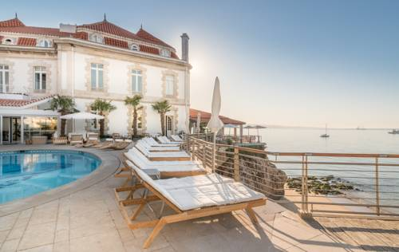

 The Albatroz HotelSituado na falésia da Costa do Estoril, o Hotel Albatroz goza de vistas soberbas sobre a Baía de Cascais. |
Hotel CidadelaSituado no centro da vila de Cascais, o Hotel Cidadela dispõe de uma piscina exterior rodeada por um jardim tropical. |

Vila Gale CascaisCom vista para o mar, este hotel está apenas a poucos metros da famosa Marina de Cascais e proporciona uma boa relação qualidade/preço. |

Hotel Fortaleza do GuinchoConstruído no local de uma fortaleza do século XVII, este luxuoso hotel dispõe de um restaurante gourmet premiado com estrela Michelin e de vistas para o Oceano Atlântico. |

Hotel Pestana Cascais OceanEste hotel de 4 estrelas na Costa do Estoril disponibiliza uma piscina interior com banheira de hidromassagem e uma sauna. |

Hotel Quinta da Marinha ResortO Hotel Quinta da Marinha é um luxuoso resort situado no Parque Natural de Sintra-Cascais, com vistas para o Oceano Atlântico. Disponibiliza um campo de golfe de 18 buracos e 2 restaurantes. |